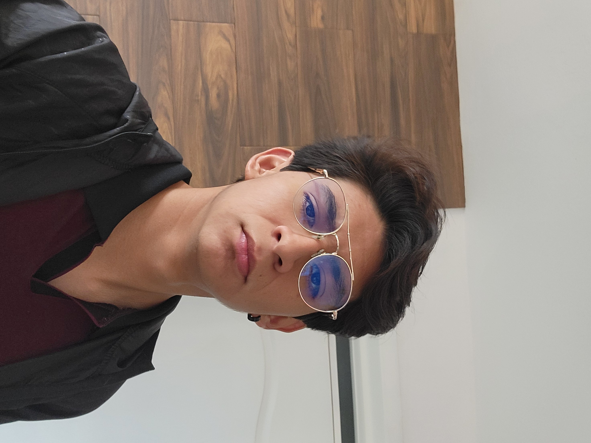

Datos del autor

Información personal
- Nombre completo: Yael Cervantes Daniel
- Fecha de nacimiento: 20 de Abril del 2006
- Estatura: 1.76cm
- Correo electrónico: yaeld382@gmail.com
- Teléfono: 2212276558
- Lugar de origen: Puebla
Colegios
- Primaria: El Chamizal
- Secundaria: Lafragua
- Preparatoria: Cecyte
- Universidad: BUAP – Licenciatura en Ciencias de la Computación
Habilidades
- Programación
- Cocinar
- Manejar
Hobbies
- Videojuegos
- Ciclismo de Montaña enduro
Ir al Glosario | Ir a MasterChef Geek